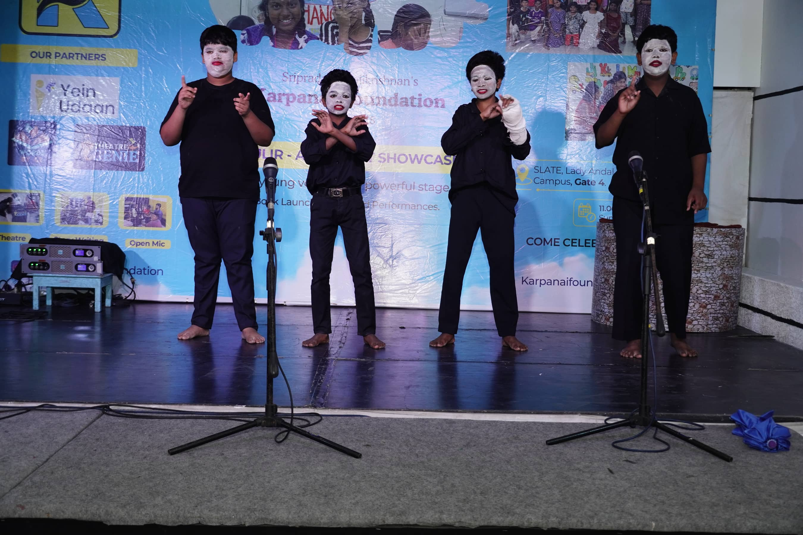
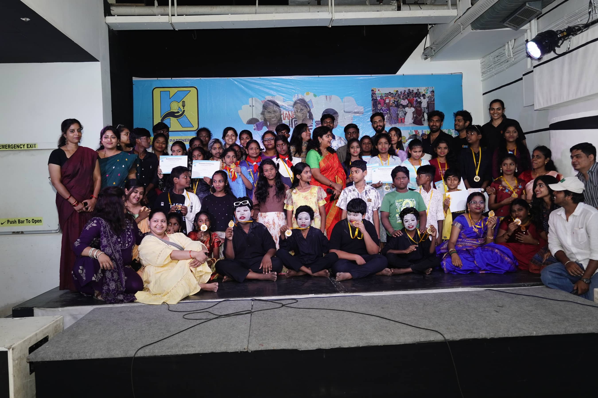

📸 Moments
Not a stock photo in sight
Tap any photo to see it full screen.

Theatre, without saying a word
⤢

Civics, becoming a real debate
⤢

Art, for its own sake too
⤢

The circle discussion, after class
⤢

The whole crew, medals and all
⤢